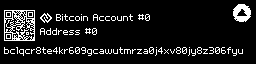
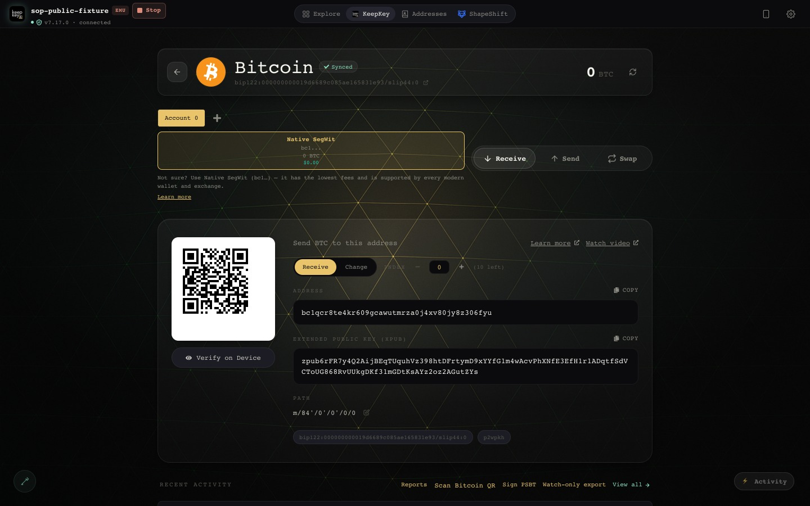

Developer
Profiles, builds and device review in one workspace.
Emulator profile
A saved test wallet on this computer.
Firmware build
Native library · selected build source
Build identity
Device preview

Recorded screen example for layout review. The app must display its active profile’s exact framebuffer.
Test & capture
Message review
Inspect a fixed public test message.
Screen capture
One target, one unaltered frame.
Reset this profile
Reset operations name the selected profile and explain what will be replaced. Start/Stop stays beside the profile.
Receive Bitcoin
Account 0 · Native SegWit · Public test wallet
Compare the complete address with the target’s display before sharing it. Never fund this public fixture.
Advanced account details
Account public-key export belongs here with an explanation of linked-address privacy.

Recorded QR from this same test address.
Settings
Stable categories, readable forms and a visible target.
Ten current UI cases
Unretouched source-UI screenshots at their CSS viewport scale. Current evidence stays separate from the proposed design.